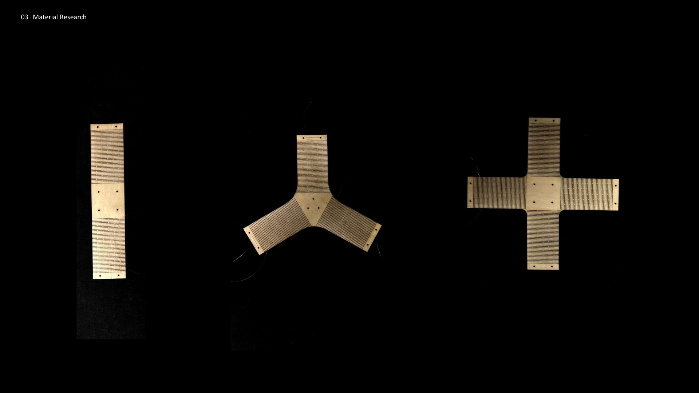
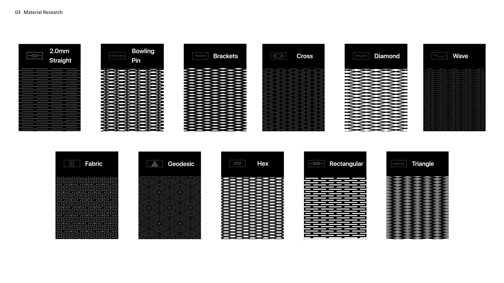
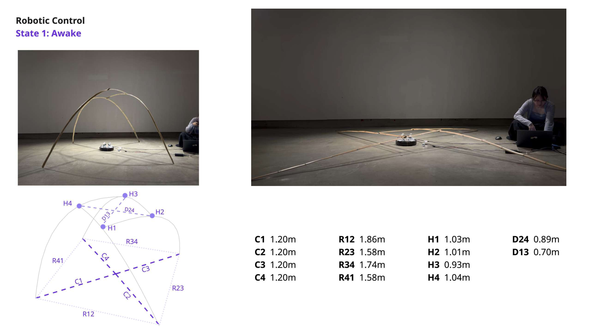
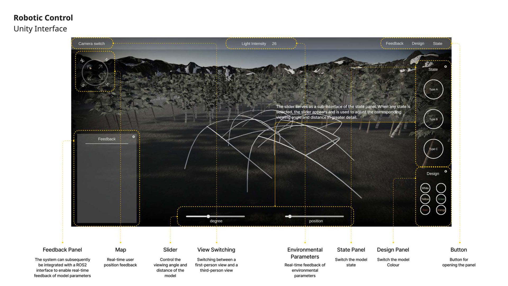
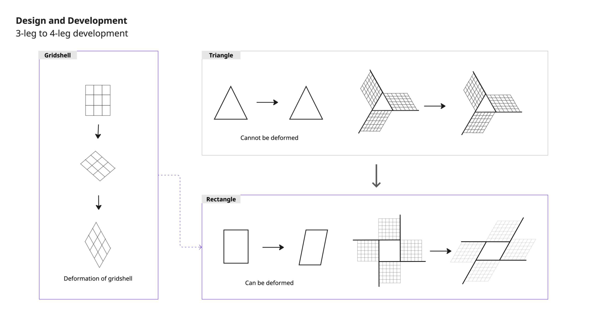

静态布景难以随表演者、音乐与场景状态变化。
Static scenery does not readily change with a performer, music or a scene.
- 01材料能否产生可控形变？
- 02构型能否形成可搭建的空间？
- 03行为能否被描述、配置与比较？
UCL team research · 2025—2026
A material-led exploration of spaces that respond to bodies, music and changing environmental states.
BAMOR 面向小型表演与展陈语境，探索可感知输入、可控制形变并能现场搭建的响应式空间。项目从切割图案、构型与竹材原型一路推进到行为状态与数字界面。
BAMOR explores responsive spatial structures for small-scale performance and exhibition settings: sensing input, controlling deformation, and translating physical states into an interface that can be configured and discussed.

A material story in five frames
Move through the field to reveal five project pages in sequence—from material studies to responsive behaviour.
移动、点击、轻触或使用键盘切换阶段
Move, click, tap, or use the keyboard

01 / Context & need
Context and the spatial need
静态布景难以随表演者、音乐与场景状态变化。
Static scenery does not readily change with a performer, music or a scene.
02 / Material & structure
How material deformation informed configuration decisions.

Configuration comparison
十一项构型评价用于记录方案取舍；这些比较分数不代表独立的工程性能认证。
These totals reproduce the eleven-criterion comparison shown in the T1 presentation. They document a design decision; they are not independent structural certification.
03 / Behaviour & interaction
Turning spatial change into states that can be compared.


56 traceable records
保留C / R / H / D原符号和米制数值；参数定义及原测量日期在当前资料中待核。
正在读取可追溯参数…
T2行为状态研究；原参数含义与测量日期待核。
04 / Iteration & decisions
The gridshell was a tested iteration and exhibition branch, rather than the final portfolio structure.

A square grid shifts toward a diamond under shear.
The T2 page documents a three-to-four-leg development.
The gridshell branch entered the degree-show context; the later main structure moved toward an elastic mesh.
05 / Outcome, exhibition & extension
From prototypes to traceable design decisions.
研究原型 / Research prototype
切缝试验建立形变语言，构型对照记录支撑取舍，行为状态与数字界面让空间变化可配置、可讨论。
Kerf tests established a deformation language; configuration studies documented support decisions; behavioural states and the interface made change configurable and discussable.
项目延伸 / Project extension
2026.10起的个人素材工作台把版本、筛选、并排比较、人工理由与备份串成连续流程；它与此前的团队研究分开记录。
From October 2026, the personal studio connects versions, filtering, side-by-side comparison, human reasoning and backup, recorded separately from the earlier team research.
Personal extension · from 2026.10
BAMOR团队研究与后来的个人工具开发分开记录。工作台保留原始素材ID和来源，让筛选、AI初筛、人工取舍与备份成为连续流程。
The UCL team research and the later personal tool are recorded separately. The workbench preserves asset IDs and sources across filtering, AI-assisted shortlisting, human decisions and backup.